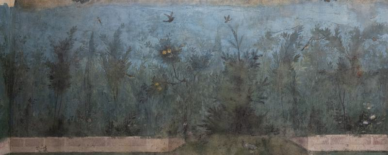

Bachillerato de Humanidades para personas adultas · Semipresencial
Nunca es tarde para volver a estudiar.
Tú puedes.
¿Dejaste los estudios, trabajas o tienes familia a tu cargo? El Bachillerato de Humanidades semipresencial del IES Sabinar está pensado para ti: obtienes el mismo título de Bachiller que en el diurno, con Latín y Griego, sin renunciar a tu vida.
No vienes todos los días
Solo tres tardes a la semana, de 17:00 a 21:00. En 1.º, lunes, martes y jueves; en 2.º, lunes, miércoles y jueves.
El resto, desde casa
Las horas a distancia se trabajan en la plataforma Moodle de la Junta de Andalucía, con materiales, tareas y cuestionarios, a tu ritmo.
Te atendemos a distancia
Tu profesorado te acompaña por la plataforma y por correo: resuelve tus dudas y sigue tu progreso, con horarios flexibles dentro del calendario de entregas.
Mismo título, mismas puertas
El título de Bachiller tiene la misma validez que en el diurno y te abre la PAU, la universidad y los ciclos de grado superior.
Matrícula
Del 1 al 10 de julio. Plazo extraordinario desde el 1 de septiembre y, si quedan plazas, hasta marzo. Requisitos: tener 18 años o cumplirlos en el año en que empieza el curso (también desde los 16 si tienes un contrato de trabajo que te impide asistir al régimen ordinario o eres deportista de alto rendimiento) y el título de ESO o de Técnico de FP. Información: 950 156 783 · tic@correo.ies-sabinar.com.
Possunt, quia posse videntur."Pueden, porque creen que pueden." (Virgilio, Eneida V, 231)

Antiguos alumnos
Lo dice quien lo cursó
Gracias al Latín y al Griego pude entrar en Derecho, la carrera que quería. Estudiar Humanidades me dio algo más valioso que conocimientos: una manera de pensar y de mirar más allá de lo evidente.
Paolo Godoy Lvova · Antiguo alumno del IES Sabinar · Grado en Derecho, Universidad de Granada
El itinerario
Qué se estudia en Humanidades
Latín y Griego en los dos cursos, las ponderaciones para la universidad y una calculadora de nota de admisión.
Ver el Bachillerato de Humanidades →Aprende y juega
Prueba cuánto latín y griego sabes ya
Juegos, la palabra de la semana y todas las fichas y recursos del departamento.
Entrar en Aprende y juega →Profesorado
Quiénes somos
Almudena Rodríguez Expósito
Turno diurno
Marcelo Antonio Lorente Lindes
Turno nocturno y semipresencial
marcelolorente@correo.ies-sabinar.com
Departamento de Latín y Griego
¿Tienes dudas o quieres saber si Humanidades es para ti? Escríbenos a marcelolorente@correo.ies-sabinar.com o a tic@correo.ies-sabinar.com, o llama al instituto (950 156 783) y pregunta por el Departamento de Latín y Griego. Te atenderemos encantados.